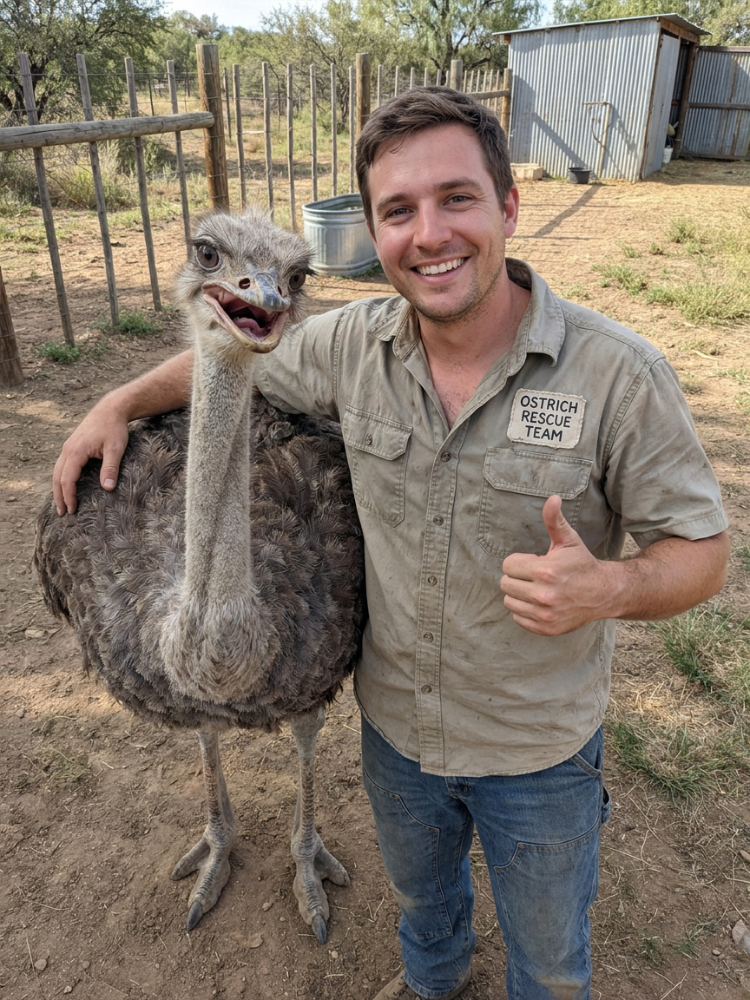
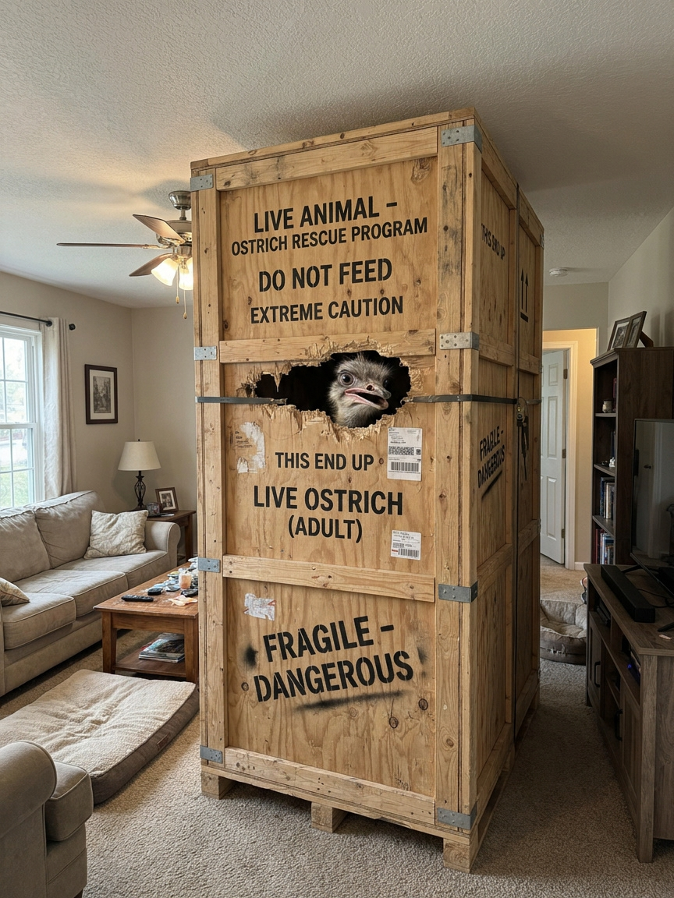

Getting user location

Thank you for participating in the free ostrich rescue program! Your live ostrich is on its way to your home address right now! There is nothing extra you need to do to arrange the delivery.
Receiving your ostrich

Your ostrich will be delivered to your home address in the next 2-67 business days, delivery times are Monday, Tuesday, Wednesday but not if it was delivered on Tuesday, Friday, Friday afternoon if we feel like it and Sunday, arrival times vary between 4:00 am and 6:15 am.
The ostrich is shipped with enough food in the container to last at least 3 hours after it is delivered, our ostriches are hand fed with live mice so be prepared with at least 37 live mice you can hand feed to it the day it arrives.